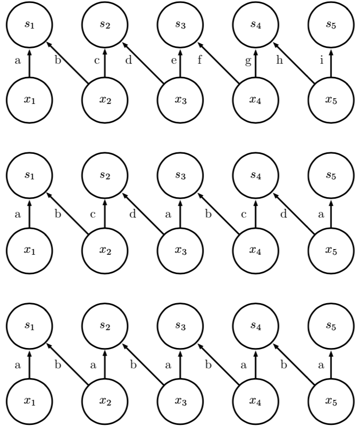
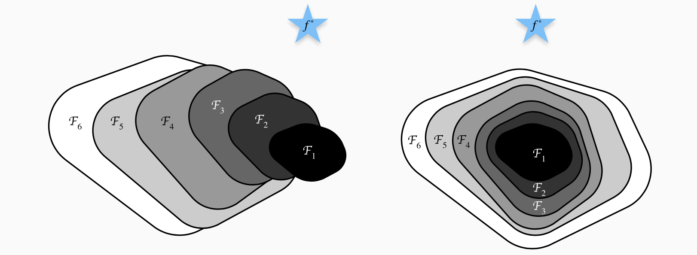

Convolutional Network

Convolution operation and cross-correlation
-
Convolution operation: To predict the position of a special object \(x=x(t)\), we do an average to the measurements in a period of time. The more recent the measurement is, the more weight it is given. Therefore, we obtain a smooth estimating function \(s=s(t)\):
- Only in our example, \(w\) is an effective probability density function, and \(w(x<0)=0\).
- \(x\) is the input, \(w\) is the kernel function, and \(f\) is refered to as feature map.
-
A discrete version of the operation could be written as:
-
For a two dimensional figure \(I\), using a two-dimensional kernel \(K\), the equivalent form is:
-
Convolution is a linear operation, so it can be expressed in the form of matrix multiplication (if we first transform the input tensor into a flat vector). The matrix contained in it is a function of the convolution kernel. This matrix is sparse and each element of the kernel is copied to multiple elements of the matrix.
- However, the cross-correlation is more often used in most nets:
- Convolution = Cross-correlation + flipping the kernel
- Example of kernel flipping:
- Convolution operations (Math) are commutative, it is because we have flipped the kernel, which refers to the decrease of the index of the kernel while the index of the input is increasing. We ignore the flip as we have abandoned the commutative property.
- In deep-learning, convolution (DL) refers to the mathematical operation cross-correlation (Math), lacking a flip to the kernel.
- Convolution = Cross-correlation + flipping the kernel
Motivations
-
Sparse Interactions
- The size of the kernel \(\ll\) The size of the input, we use small amount of kernels to detect some small features.
- For a \(m\)-dimensional input and a \(n\)-dimensional output, a full-connection network have a \(m\times n\) matrix to store the parameters. However, by limiting the number of connections to \(k<m\), the matrix is reduced to \(k \times n\).
-
Parameter sharing
- Using same parameters (connected to the kernel elements) to different areas of the input.
-
Equivariant representations
- Equivariance: \(f(g(x))=g(f(x))\), for example translation of certain functions. (Rotations or other operations may not be equivariant)
Process
- The first stage, convolutional layer trigger a linear activation response,

-
The second stage, the detector stage using a non-linear activation function to make the previous output (after the linear- activation response) pass through the architecture.
-
The third stage, we use the pooling function to adjust the input.
Convolution
- Tunnels : The first number of input tunnels equals to 3, is respectively referring to the R,G,B colors; The output tunnels refer to the number of characteristics that we wish to extract.
- 1x1 kernel is used to control the amount of tunels and to reduce or change the dimensions of inputs. Example of 3 tunnels input transformed into a 2 tunnels output :

Pooling
-
The pooling function uses the overall statistical characteristics of the adjacent output at a certain position to replace the output of the network at that location.
-
When the input are slightly translated, the pooling function helps to make the expression of input invariant.
-
We care if a certain feature exists, but the specific position is unimportant.
-
Advantages:
- Produce a same-sized output for different kinds of input
- Because the pooling integrates the feedback of all neighbors, it makes it possible that the pooling unit is smaller than the detection unit. We can use the integrated pooling area.
Requirements for the task
-
There is no evident or significant relationship between two locations that are separated by a considerable distance. (Convolution Layer)
-
The task does not requires focus on a specific location. (Pooling Layer)
Improvements from convolutional operations in math
-
Differences:
- Multiple convolution processing in the same time: multiple features to be extracted.
- Input as four dimension: \((ind,i,j,k)\)
- \((j,k)\) coordinates in the picture
- \(i\) the tunnel (RGB)
- \(ind\) the index in the whole batch
- Not necessarily invariant
-
Partially connected networks = Unshared Convolution, partially connected without sharing the same parameters. Used when we are guaranteed that a certain feature will only appear in a certain part of the picture:
- \(V_{l,x,y}\): Input, the value of the position \((x,y)\) of the input and \(l\) tunnel.
- \(W_{i,j,k,l,m,n}\): The weight matrix (6-dimensional), output \((i,j,k)\): \(i\) tunnel and position \((j,k)\), input \((l,m,n)\): \(l\) tunnel, \((m,n)\) the difference of index
- \(Z_{l,x,y}\): The output, same form with the input
-
Note: \(-1\) comes from the index problem, modern computer usually begins its index from 0.
-
Fundamental Convolution:
- Kernel: \(K_{i,j,k,l}\), the \(i\) (output) tunnel, connection with the \(j\) input tunnel, positioned \((k,l)\), that is to say, do a linear combination to all the channels of the input.
-
Stride: If we want to sample the output at an interval of \(s\) pixels in each direction, we can apply a stride of \(s\) during the convolution or pooling operation:
-
(Zero) Padding: The \(V\) input will decrease its size each layer.
- Valid Convolution: Only allows access to the position where the entire core can be fully contained in those images. A \(m\)-width input + A \(k\)-width kernel will end up with a \((m-(k-1))\)-width output.
- Same Convolution: Only enough zero filling is performed to keep the output and input the same size. Problem: The boundary pixels are accessed less time than the other pixels.
- Full Convolution: Each pixel are accessed \(k\) times, by padding \((k-1)\) zeros on each side. The size of the output is now \(m+2(k-1)-(k-1)=m+k-1\).
- The best amount of zeros padded is between the amount of zeros required in valid convolution and same convolution.
-
Tiled Convolution:
- \(t\) is the size of a specific type of kernel. If \(t\) equals to the width of the output, then it is partially connected network.
- The layer cycles in a collection of different kernels.
-
Comparison between partially connected, tiled convolution, convolution networks: 
-
Characteristics Learning: The supervised learning of special characteristics(kernels) are relatively expensive, therefore these methods are applied:
- Random Initialization
- Manually design
- Unsupervised learning
ResNet
- Residual Newtorks (ResNet) is a CNN structure designed to contain hundreds of layers.
-
Degradation Problem: Saturation of accuracy when numbers of layers increases, and surprisingly a decline follows.
-
Principle:
- Identity mapping: By adding an infinite number of layers that \(f(x)=x\), will not make the result better, nor leads to a worser result.
- Suppose \(f\in \mathcal F\), where \(f^\star\) is the best function. A larger function set will not necessarily leads to \(f^\star\), while a new set containing \(u = \mathrm{id}\) is theoratically realistic : 
- Therefore, by representing \(f\) as We are now required to learn \(\mathcal F\) instead of \(f\), \(\mathcal F\to 0\) if there is no update to the model. It is relative more easier to simplify, because we can use the \(L_2\) norm.
-
Residual Block:

- Reducing the amount of parameters by using 1x1 kernel:

- Reducing the amount of parameters by using 1x1 kernel:
-
Structure:

- Resnet use stride instead of pooling to decrease the dimensions.
- A great thanks to 给妹纸的深度学习教学(4)——同Residual玩耍.
Relationship with Neural Science
-
Primary Visual Cortex (V1) and CNN
-
Similarities:
-
Spatial mapping: a two-dimensional structure that reflects the image structure of the retina.
-
Simple Cell \(\iff\) Convolution layer and detective layer: A linear function in the receptive field.
-
Complex cell \(\iff\) Pooling layer: Non-linearity, invariance to slight translations.
-
-
Differences:
-
Attention Mechanism: Special focus on certain parts or areas.
-
Integration with other sensations, such as sounds and smells.
-
Besides object detection, visual mechanisms also includes comprehension of all the scenes, including relationships between different objects.
-
Feedbacks from subsequent layers.
-
-
How to train CNNs? Neural scientists haven't given an effective response.
-
Reverse Correlation: Impossible to calculate the weight of certain neurons, therefore replaced by detecting their responses, thus obtaining the approximate weight.
- Gabor Function: weight of a certain pixel in a 2d figure:
- \(s(I)\) response to pixel with coordinates \(I(x,y)\)
- \(w(x,y)\) defined as
where
and
- \(\exp\) term limits the response only to these near \((x_0,y_0)\)
- \(\cos\) term controls how the neuron will response to different brightness of the light along \(x'\) axe. Simple cells are excited when the phase of the image light wave matches the phase of the cell. \(\phi\) can control the phase.
- \((x_0,y_0,\tau)\) together define the coordinate system by translation and rotation.
- Gabor Function: weight of a certain pixel in a 2d figure:
-
-
When human beings staring at a certain object <100ms, information flows from LGN, V1, V2 to IT, where IT has been proved to be semblable to CNNs.